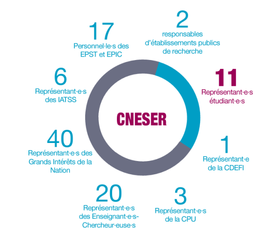

CNESER
Qu'est-ce que les élections CNESER ?
Le CNESER (Conseil National de l'Enseignement Supérieur et de la Recherche) est un organe consultatif réunissant des représentant·e·s de la communauté universitaire. Il examine les textes relatifs à l'enseignement supérieur et à la recherche : encadrement des stages, budget, formation professionnelle, accréditation des établissements, Composé d'une centaine de membres, il se réunit en séance plénière ou en formation restreinte, généralement une fois par mois.
Il est notamment consulté sur :
- Les stratégies nationales de l'enseignement supérieur et de la recherche et les rapports biennaux au Parlement
- Les orientations générales des contrats pluriannuels et la répartition des emplois et des moyens entre les différents établissements
- Les projets de réformes concernant l'organisation de la recherche et les réformes relatives à l'emploi scientifique
- Le cadre national des formations, la liste des diplômes nationaux, les modalités et demandes d'accréditation ainsi que la carte des formations supérieures et de la recherche prévus à l'article
- La création, la suppression ou le regroupement d'établissements ou de composantes
Qui compose le CNESER ?
Nos livrets
Nos autres contributions
- 2025 - Valorisation de l'engagement étudiant
- 2025 - Régulation de l'ESR privé
- 2024 - Note réforme FDE
- 2024 - Urgence écologique dans l'ESR
- 2024 - Orientation et Insertion Professionnelle
- 2024 - Financement de l'ESR
- 2024 - Mon Master
- 2024 - Santé mentale
- 2024 - Accès à la santé
- 2023 - Parcoursup
- 2023 - Parcours d'Engagement et de Citoyenneté
- 2023 - La démocratie au défi des jeunes
- 2023 - Lutte contre les discriminations et violences associées
- 2022 - Inclusion des personnes en situation de handicap (avec 100% Handinamique)
- 2022 - 3ème cycle et doctorat (résultats d'enquête)
- 2022 - 3ème cycle et doctorat (contribution)